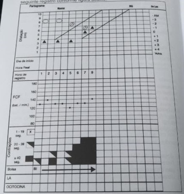

Questão 1 · Acidose metabólica · 4000034479Paciente do sexo feminino, 67 anos, foi submetida a colectomia laparoscópica. Ao avaliar a paciente na enfermaria, três horas após a chegada do bloco cirúrgico, o médico residente da Cirurgia Geral observou que a mesma encontrava-se agitada, pálida, taquipnéica, hipotensa e taquicárdica. O resultado de gasometria MAIS PROVÁVEL neste momento é:
A pH: 7,21; PaCO₂: 59 mmHg; HCO₃^-: 26 mEq/L; BE: +2mEq/L.
B pH: 7,26; PaCO₂: 33 mmHg; HCO₃^-: 17 mEq/L; BE: -7 mEq/L.
C pH: 7,32; PaCO₂: 47 mmHg; HCO₃^-: 26 mEq/L; BE: +3 mEq/L.
D pH: 7,49; PaCO₂: 33 mmHg; HCO₃^-: 22 mEq/L; BE: +1 mEq/L.
Questão 2 · Protocolo de transf usão maciça · Cirurgia · 4000034470Paciente do sexo masculino, 55 anos, almoxarife, colidiu seu veículo contra um poste, cando cerca de uma hora preso às ferragens, consciente. Após sua retirada do carro, apresentava-se pálido, com frequência cardíaca de 130bpm, frequência respiratória de 32irpm, queixando-se de dor em membro inferior esquerdo, que estava deformado. Apresentava também lesão corto-contusa em sobrancelha esquerda e hematoma no local, sem sangramento ativo. Recebeu 2.000mL de soro siológico no transporte. À admissão no Pronto Socorro, estava confuso, PA 80x50mmHg, ausculta pulmonar mostrou murmúrio vesicular pouco diminuído bilateralmente. Não apresenta distensão abdominal e sem dor à palpação. A conduta inicial MAIS ADEQUADA é:
A encaminhar imediatamente para realização de tomografias.
B infundir mais 2 litros de soro em dois acessos.
C providenciar imobilização do membro fraturado.
D solicitar hemotransfusão imediatamente.
Questão 3 · Apendicite Aguda · Cirurgia · 4000034464Adulto de 29 anos, sexo masculino, psicólogo, apresentou quadro de dor abdominal difusa, acompanhada de náusea. Após algumas horas, a dor localizou-se no quadrante inferior direito do abdome. Foi levado à UPA, e o médico identi cou ponto doloroso na fossa ilíaca direita, à compressão e à descompressão. Considerando-se o diagnóstico MAIS PROVÁVEL, assinale alternativa CORRETA.
A A ressonância magnética é o exame de imagem com maior acurácia diagnóstica, mas tem a desvantagem do tempo necessário e dos custos para a sua realização
B A tomografia computadorizada com contraste não apresenta melhora da acurácia diagnóstica com relação à tomografia sem contraste
C O esclarecimento diagnóstico, em alguns pacientes, só acontece durante procedimento cirúrgico exploratório
D O exame clínico de palpação da fossa ilíaca direita tem baixa sensibilidade e especificidade e auxiliam o diagnóstico em menos da metade dos casos
Questão 4 · Avaliação da Dor Abdominal · Cirurgia · 4000034456Professora aposentada de 62 anos apresentou quadro de dor abdominal intensa e encaminhou-se a UPA. Algumas características dos quadros dolorosos abdominais podem auxiliar no diagnóstico e na condução de cada caso. Em relação a essa paciente, assinale a alternativa CORRETA.
A A dor da isquemia mesentérica crônica é contínua e não guarda relação com as refeições
B A dor da pancreatite aguda classicamente se alivia na posição sentada e com o tronco reclinado para frente
C A dor da úlcera duodenal se inicia logo após a refeição, mas melhora espontaneamente após algumas horas
D A paciente com peritonite tende a ficar inquieta e agitada
Questão 5 · Diagnóstico Dif erencial · Manif estações Clínicas · Diagnóstico · 4000034445Paciente do sexo feminino, 66 anos, informa aparecimento de icterícia rapidamente progressiva com colúria e acolia fecal seguida de prurido intenso. Perda ponderal de 5Kg com moléstia atual. Nega febre. Ao exame físico, paciente ictérica(3+/4+), desidratada, descorada (+/4+). Abdome globoso com áreas de escari cações lineares com infecção secundária. Ausência de visceromegalias. Peristaltismo presente. Em relação a essa paciente, assinale a alternativa CORRETA.
A A paciente pode evoluir com quadro de insuficiência renal aguda devido às consequências da ausência de bile no trato intestinal
B A principal contraindicação de se fazer colangioressonância é a necessidade do uso de contraste
C É necessária a realização de exames laboratoriais para se decidir sobre a necessidade de administração de vitamina K, haja vista ser sua reserva hepática elevada
D Para se iniciar colestiramina, deve se aguardar as confirmações de obstrução completadas vias biliares extra hepáticas
Questão 6 · Anticoagulação · Cirurgia · 4000034434Paciente de 37 naos, gestante de 22 semanas, queixa-se de dor em membro inferior esquerdo (MIE) com empastamento da panturrilha ipsilateral desde a 18ª semana. Ao exame físico, apresenta sinal de homans positivo, com edema discreto (+/4+) em MIE. A dosagem de D-dímero foi elevada e o ecodoppler venoso demonstrou presença de trombo recente em veia femoral superficial de MIE. A conduta MAIS INDICADA nesse momento é a administração de:
A ácido acetilsalissilico.
B enoxaparina.
C rivaroxabana.
D varfarina.
Questão 7 · Prof ilaxia pósexposição · Vacinação · 4000034429Auxiliar de enfermagem de 28 anos foi vítima de acidente com material pérfurocortante no cento cirúrgico. A pro ssional não sabe precisar sobre sua vacinação contra hepatite B, mas o exame pré-admissional realizado há um ano mostrou dosagem de antiHBs de 15mUI/mL. O teste rápido do paciente-doente foi reagente para hepatite B. A conduta MAIS ADEQUADA para essa situação nesse momento é:
A indicar vacinação para hepatite B.
B notificar o sistema de informação de agravos de notificação (SINAN).
C prescrever imunoglobulina humana anti-hepatite B.
D solicitar dosagens seriadas das transaminases.
Questão 8 · Antibioticoprof ilaxia Cirúrgica · 4000034422Paciente do sexo masculino, 48 anos, 75 Kg, engenheiro, foi submetido a hepatectomia direita com duração de cinco horas. Houve sangramento considerável no perioperatório com necessidade de hemotransfusão. Foi utilizada, como antibiótico profilático, cefazolina, com repique na quarta hora. Não foram administradas doses pós operatórias. Em relação a esse caso e ao uso de antibiótico profilático em cirurgia, assinale alternativa CORRETA.
A Além de desnecessário, o repique aumentou os riscos de alteração da microbiota e de indução de resistência
B Deveria ter sido associado antibiótico bacteriostático devido à manipulação de viasbiliares.
C O antibiótico profilático deveria ter sido prolongado por 24 horas devido à magnitudeda operação.
D O sangramento excessivo pode ter interferido na eficácia do antibiótico profilático.
Questão 9 · Soluções de reposição volêmica · Avaliação das Necessidades Energéticas · Cardiologia · 4000034416Mulher de 68 anos, aposentada, 60Kg, desnutrida grave em decorrência de carcinoma hepatocelular, foi submetida a hepatectomia parcial. No perioperatório houve sangramento importante, sendo necessária a administração de 1.200mL de concentrado de hemácias e 1.200 mL de solução glico siológica. A diurese ao nal da cirurgia foi de 500mL. O balanço hídrico foi considerado zerado pelo anestesista. Na enfermaria, na manhã do dia seguinte (cerca de 12 horas de PO), após ter recebido 1.500mL de soro glicosado isotônico a 5%, o médico residente constatou diurese de 300mL e que a drenagem pelo dreno perihepático era serohemorrágica em quantidade íntima. A prescrição MAIS ADEQUADA para essa paciente deve considerar que:
A a oferta de líquidos para as próximas 24 horas deve ser de aproximadamente 1.100ml.
B a oferta de potássio deve ser de 60meq, equitativamente dividida no esquema de soro.
C a quantidade de sódio deve ser incrementada para compensar a desnutrição e a oligúria.
D há indicação de se administrar furosemida em bolus.
Questão 10 · Gastrostomia · 4000034409Adulto do sexo masculino, 41 anos, hígido, vitima de traumatismo cranioencefálico, evoluiu com sequelas neurológicas, incluindo ""engasgo"" e aspiração ao tentar se alimentar por via oral. Durante cinco semanas, recebeu dieta enteral através de cateter de Dobbho (com extremidade distal do cateter em posição gástrica). Reavaliações neurológica e fonoaudiológica definiram a impossibilidade de o paciente retornar com a alimentação oral nos próximos meses. Não há comorbidades, cirurgias prévias e complicações. A via de acesso MAIS ADEQUADA, para se manter a administração de dieta é:
A gastrostomia cirúrgica (Stamm).
B gastrostomia com extensão jejunal.
C gastrostomia endoscópica peroral.
D jejunostomia laparoscópica.
Questão 11 · Quadro clínico · Manejo inicial e pacotes · Fisiopatologia e alterações inf lamatórias · 4000034402Mulher de 45 anos foi internada em UTI devido a quadro de choque séptico de provável foco abdominal. Encontra-se intubada sob ventilação mecânica, com fração inspirada de O₂ de 0,9. Dentre as alternativas abaixo, a PRIMEIRA MEDIDA a ser adotada é a administração de:
A coloide para expansão volêmica.
B corticosteroide.
C esquema antimicrobiano.
D noradrenalina e vasopressina.
Questão 12 · Investigação Complementar · 4000034395Paciente do sexo masculino, 64 anos, natural e residente em Belo Horizonte, procura UBS por estar apresentando nas últimas semanas disfagia, halitose, sialorréia, regurgitação líquida, tosse e deglutição ruidosa. Relata melhora da disfagia quando ele próprio comprime a região cervical esquerda com a mão espalmada ou inclina a cabeça para esse mesmo lado. Refere emagrecimento de 5Kg em dois meses. O exame inicial MAIS ADEQUADO para se fazer o diagnóstico dessa afecção é:
A endoscopia digestiva alta.
B esofagograma baritado.
C manometria esofágica.
D tomografia de cabeça e pescoço.
Questão 13 · Hiperparatireoidismo primário · 4000034391Mulher de 45 anos, modista, natural e residente em Belo Horizonte informa nefrolitíase de repetição (seis crises álgicas em dois anos). Foi avaliada por nefrologista e a dosagem sérica de paratormônio (PTH) mostrou nível aumentado em três vezes o valor de referência. A conduta inicial MAIS ADEQUADA é solicitar:
A densitometria óssea.
B cintilografia com tecnécio -99 sestamibi.
C tomografia computadorizada de tórax e abdome.
D ultrassonografia da tireoide.
Questão 14 · Bioética · 4000034381Paciente do sexo masculino, 65 anos, lúcido e bem orientado, compareceu sozinho à consulta solicitando sigilo com os familiares em relação ao problema dele. O motivo da consulta foi o diagnóstico de adenocarcinoma de reto feito por biopsia durante retosigmoidoscopia. A situação clínica e a proposição do tratamento foram detalhadas com o paciente, dando-se ênfase aos riscos e benefícios. Após os esclarecimentos das dúvidas sobre o procedimento e sobre a possibilidade de colostomia temporária, o paciente negou a se submeter ao tratamento proposto. Dentre as opções abaixo a conduta MAIS ADEQUADA é:
A acatar a decisão do paciente e colocar-se à disposição.
B convocar familiares para convencimento do paciente.
C exigir a assinatura de termo de isenção de responsabilidades.
D optar por internação compulsória para realização de cirurgia.
Questão 15 · Resposta Neuroendócrina · Cirurgia · 4000034373Homem de 52 anos, 66kg, com adenocarcinoma de cólon esquerdo e sem comorbidades, estava com operação programada para as 7:30h, tendo cado em jejum desde as 18 horas do dia anterior à cirurgia. Não houve intercorrências per-operatórias. No pós-operatório imediato, apresentou glicemia capilar de 180mg%, volume urinário de 450mL em 24 horas, sódio plasmático de 132mEq/L e potássio de 5,8mEq/L. Assinale a alternativa com a correlação MAIS ADEQUADA entre a alteração pós-operatória observada e sua respectiva justificativa.
A Hipercalemia - aumento da produção de glucagon
B Hiperglicemia - jejum prolongado
C Hiponatremia - aumento da produção de vasopressina
D Oligúria - diminuição da liberação de aldosterona
Revisar: possível letra faltando em enunciado
Questão 16 · Linf omas Gástricos · Classif icação Histológica de Lauren · Classif icação de Borrmann · 4000034362Paciente do sexo feminino, 34 anos, hígida até então, vem apresentando há seis meses dor epigástrica, saciedade precoce e vômitos, associados a emagrecimento de 7Kg. Endoscopia digestiva alta revelou estômago de paredes espessadas, não distensíveis e lúmen reduzido, sem alterações evidentes na mucosa gástrica. Tomogra a computadorizada de abdome e pelve (com contraste venoso e oral) mostrou in ltração tumoral difusa da parede gástrica, ascite volumosa, espessamento peritoneal, omentalcake e massa ovariana à direita. O diagnóstico MAIS PROVÁVEL é:
A câncer gástrico do tipo Borrmann I.
B carcinoma gástrico do tipo intestinal de Lauren (tumor bem diferenciado).
C linfoma gástrico do tipo MALT.
D neoplasia gástrica com tumor de Krukenberg.
Questão 17 · Classif icação do choque hemorrágico · Cirurgia · Avaliação inicial do paciente em choque · 4000034354Paciente do sexo masculino, 36 anos, taxista, foi vítima de acidente automobilístico. Na avaliação clínica realizada na cena do trauma, ele estava consciente, mas sudorético e com confusão mental, palidez cutâneo-mucosa acentuada e com diminuição da amplitude dos pulsos. Pressão Arterial de 90/60mmHg e FC de 120bpm. Dentre os achados desse exame clínico, NÃO pode ser considerada isoladamente sinal de choque:
A A alteração do estado de consciência
B A taquisfigmia
C A vasoconstrição periférica
D O valor da pressão arterial aferida
Questão 18 · Cirurgia · Aderências Intestinais Bridas · Exames de Imagem · 4000034344Paciente do sexo masculino, 38 anos, é atendido na UPA queixando-se de dor e distensão abdominal, com parada da eliminação de fezes há quatro dias e de gases há cerca de 24 horas. Relata ainda náuseas e hiporexia. História pregressa de cirurgia bariátrica há dois anos (IMC atual = 27Kg/m²) e apendicectomia há 22 anos. Abdome bem distendido, algo doloroso, mas sem irritação peritoneal. Toque retal mostrou esfíncter normotônico, com ausência de fezes e de sangue na ampola retal. A conduta propedêutica MAIS ADEQUADA para se iniciar a avaliação é solicitar:
A colonoscopia.
B dosagem de amilase e lipase séricas.
C radiografia de abdome.
D ultrassonografia abdominal.
Questão 19 · Avaliação Nutricional Global · Cirurgia · 4000034333Paciente do sexo masculino, 48 anos, pedreiro, foi internado para preparo préoperatório visando a realização de tratamento cirúrgico de neoplasia de laringe. Queixase de disfagia e odinofagia com perda ponderal de 4Kg com a moléstia atual (Peso atual 68Kg). Índice de massa corporal de 22Kg/m². Refere grande di culdade para se levantar de leito frente à fraqueza generalizada. Dos fatores listados abaixo, o critério clínico de MAIOR RELEVÂNCIA para o diagnóstico de desnutrição é:
A a dificuldade de deglutição.
B a diminuição na capacidade funcional.
C o índice de massa corporal.
D o peso informado à internação.
Questão 20 · Fatores de Risco para Cicatrização Anormal · 4000034324Paciente do sexo masculino, 36 anos, vítima de traumatismo na panturrilha esquerda há três dias, procurou uma UPA para tratamento. Ao exame, apresentava ferida cortocontusa, superficial com 3cm de diâmetro, sem sinais infecciosos. Em relação aos curativos e à cicatrização da ferida é CORRETO:
A A cicatrização será mais bem-sucedida em ambiente frio, seco e limpo
B A taxa de epitelização sob curativo oclusivo será maior do que se a ferida for deixada descoberta
C Se for empregado curativo absortivo haverá maior maceração da pele circundante
D A manutenção de pH levemente alcalino e com alta tensão de oxigênio local propiciaria bom ambiente para proliferação de fibroblastos
Questão 21 · Tratamento medicamentoso · Insulinoterapia no tratamento do diabetes mellitus tipo 2 · 4000034307Mulher de 55 anos comparece ao consultório de Clínica Médica para o exame periódico de saúde. Queixa-se de falta de energia, roncos, di culdade de memorização, poliúria e perda de 5kg em dois meses. Desconhece doenças prévias, nega tabagismo, etilismo ou uso de quaisquer medicamentos. Ao exame físico, apresenta PA 154/94mmHg, FC 76bpm, FR 17irpm, SpO₂ em ar ambiente 92%, peso 90kg, altura 1,50m. Está alerta e orientada, com mucosas coradas e hidratadas. Os exames respiratório e cardiovascular são normais. O abdome é globoso, normotenso e indolor. Exames de laboratório: GJ 323 mg/dL; HbA1C 10,7%; ALT 80U/L; AST 55U/L; BD 1,2mg/dL; ferritina 850mg/dL; Hb 17,3d/Dl; LG 8.750/mm³; Plq136.000/mm³; Creat 0,9mg/dL; Na^+ 137mEq/L; K 4,3mEq/L; Mg² 2,0mEq/L; fósforo 3,1mg/dL; Ca² 9,1mg/dL, Albumina 3,5g/dL; TSH 1,2microUI/mL. Assinale a alternativa que apresenta a conduta MAIS ADEQUADA nesse caso e o respectivo efeito terapêutico desejado.
A Iniciar agonista do receptor de GLP-1 ambulatorialmente, para redução dascomplicações macrovasculares, porém não das microvasculares
B Iniciar insulina de ação longa à noite ambulatorialmente, para redução dascomplicações microvasculares, porém não das macrovasculares
C Iniciar metformina e sulfonilureia ambulatorialmente, para redução das complicaçõesmicrovasculares e macrovasculares
D Internar a paciente e iniciar insulinoterapia intensiva (insulina basal e prandial), pararedução das complicações microvasculares, porém não das macrovasculares
Questão 22 · Troponina · PESI · Heparina · 4000034298Mulher de 34 anos comparece à UPA com a queixa de dispneia em repouso iniciada há 12h. Teve lho por parto normal há 40 dias. Desconhece doenças prévias. Ao exame físico, apresenta FC 109bpm, PA 130/86mmHg, FR 29irpm, SpO₂ em ar ambiente 88%. O exame respiratório revela taquipneia e crepitações teleinspiratórias na base do tórax à direita. Solicita-se angiotomogra a do tórax, que revela falhas de enchimento nos ramos arteriais pulmonares lobares e segmentares bilateralmente. O ecocardiograma revela dilatação e hipocontratilidade do ventrículo direito. Foi iniciada oxigenioterapia suplementar por cateter nasal a 3L/min. Exames de laboratório: Hb 14,5g/dL; LG 12.800/mm³; NS 10.420/mm³; Plq 280.000/mm³, troponina 10ng/L; BNP 590 pg/mL. A conduta imediata MAIS ADEQUADA nesse caso é indicar:
A anticoagulantes orais diretos (DOAC).
B heparina de baixo peso molecular.
C tenecteplase.
D trombectomia mecânica.
Questão 23 · Tratamento · 4000034291Homem de 21 anos queixa-se de coriza, espirros, obstrução nasal, tosse seca, gotejamento nasal posterior, disfonia e dor facial há dois dias. Nega comorbidades. Ao exame físico, apresenta PA 120/60mmHg, FC 60bpm, FR 13irpm, SpO₂ em ar ambiente 99%, Tax 37,8°C. Os exames respiratório e cardiovascular são normais. Há hiperemia das mucosas ocular, nasal e faríngea, úlceras rasas na mucosa do palato mole e pontos de exsudato purulento nas tonsilas palatinas. A conduta inicial MAIS ADEQUADA nesse caso é prescrever:
A amoxicilina e anti-inflamatório não esteroidal, ambos para uso oral.
B levofloxacino e glicocorticoide, ambos para uso oral.
C n-acetilcisteína e anti-histamínico, ambos para uso oral.
D soro fisiológico e glicocorticoide, ambos para uso tópico nasal.
Questão 24 · Bacteriúria assintomática · 4000034283Mulher de 83 anos é levada à UPA pela cuidadora com o relato de piora de estado geral, prostração, recusa alimentar e falta de interação com terceiros desde a manhã do dia anterior. Vive em instituição de longa permanência e apresenta demência de Alzheimer. Habitualmente se alimenta da dieta pastosa com auxílio, requer assistência para a higiene pessoal e para se vestir, não tem controle es ncteriano, preserva a fala e a interação com outras pessoas. Ao exame físico, apresenta FC 104bpm, FR 17irpm, PA 130/90mmHg, Tax 36,8°C. Está sonolenta, gemente, apresenta abertura ocular ao chamado e localiza o estímulo doloroso. As mucosas estão hipocoradas e desidratadas. Restante do exame físico sem alterações. Exames de laboratório: Hb 12,4g/dL; LG 7.000/mm³; Plq 201.000/mm³; PCR 5mg/L. Exame de urina (amostra colhida por sondagem vesical): densidade 1.020; pH 6,0; nitro negativo; esterase leucocitária ++; proteínas +; hemoglobina +; 15 piócitos/campo, 11 hemácias/campo. Bacterioscopia de gota de urina não centrifugada: numerosos bastonetes Gram- negativo. Assinale a conduta imediata MAIS ADEQUADA nesse caso.
A Administrar ceftriaxona pela via IV
B Administrar piperacilina-tazobactam pela via IV
C Prescrever hidratação enteral por sonda nasoentérica
D Prescrever hidratação IV e progredir na investigação diagnóstica
Questão 25 · Mielopatias · 4000034271Um homem de 70 anos queixa-se de dor em queimação no pescoço e no braco esquerdo. Relata ainda urgência e esforço miccional, jato urinário reduzido, sensação de esvaziamento vesical incompleto após micção, além de di culdade para deambular. Nega comorbidades ou uso de medicamentos. Ao exame físico, apresenta PA 120/70mmHg, FC 80bpm, FR 13irpm, SpO₂ em ar ambiente 97%. Encontra-se alerta, orientado, corado e anictérico. O exame dos membros superiores mostra fraqueza à exão do cotovelo e à abdução do ombro esquerdos, com hiporre exia bicipital ipsilateral. A força nos membros inferiores está reduzida de forma simétrica, observando-se bilateralmente espasticidade, hiperre exia patelar e reflexo cutâneo-plantar extensor. Há perda da propriocepção. A marcha é espástica com passos altos e fortes. Assinale o diagnóstico etiológico MAIS PROVÁVEL nesse caso.
A Esclerose lateral amiotrófica
B Espondilopatia compressiva
C Hidrocefalia de pressão normal.
D Mielopatia esquistossomótica
Questão 26 · Mielopatias · 4000034246Um homem de 70 anos queixa-se de dor em queimação no pescoço e no braco esquerdo. Relata ainda urgência e esforço miccional, jato urinário reduzido, sensação de esvaziamento vesical incompleto após micção, além de di culdade para deambular. Nega comorbidades ou uso de medicamentos. Ao exame físico, apresenta PA 120/70mmHg, FC 80bpm, FR 13irpm, SpO₂ em ar ambiente 97%. Encontra-se alerta, orientado, corado e anictérico. O exame dos membros superiores mostra fraqueza à exão do cotovelo e à abdução do ombro esquerdos, com hiporre exia bicipital ipsilateral. A força nos membros inferiores está reduzida de forma simétrica, observando-se bilateralmente espasticidade, hiperre exia patelar e reflexo cutâneo-plantar extensor. Há perda da propriocepção. A marcha é espástica com passos altos e fortes. A propedêutica imediata MAIS INDICADA na investigação diagnóstica nesse caso é a:
A ressonância magnética da coluna cervical.
B ressonância magnética da coluna torácica.
C tomografia computadorizada da coluna lombar.
D tomografia computadorizada do crânio.
Questão 27 · Quadro clínico · 4000034234Um homem de 50 anos comparece à UPA com queixa de tosse seca há 45 dias. È tabagista há 30 anos e fuma um maço de cigarros por dia. Nega outras queixas ou doenças prévias. Realizou uma radiogra a do tórax que pode ser vista a seguir. Dentre as opções abaixo, assinale aquela que NÃO FAZ PARTE do diagnóstico diferencial para esse paciente.

A Adenocarcinoma pulmonar.
B Histiciotose de células de Langerhans.
C Linfoma não Hodgkin
D Sarcoidose pulmonar.
Questão 28 · Semiologia · Quadro clínico · 4000034216Um homem de 50 anos comparece à UPA com queixa de tosse seca há 45 dias. È tabagista há 30 anos e fuma um maço de cigarros por dia. Nega outras queixas ou doenças prévias. Realizou uma radiogra a do tórax que pode ser vista a seguir. Um achado NÃO esperado ao exame físico respiratório na base do hemitórax direito desse paciente seria:

A Pectorilóquia afônica à ausculta.
B Redução do frêmito toracovocal à palpação.
C Som bronquial à ausculta.
D Submacicez à percussão.
Questão 29 · HCVRNA · Interpretação dos marcadores sorológicos · AntiHCV · 4000034193Homem de 22 anos procura atendimento médico com relato de que a perceira sexual foi recentemente diagnosticada com herpes genital. Ele está assintomático. Não apresenta doenças conhecidas e não faz uso regular de medicamentos. Nega cirurgias prévias, transfusões sanguíneas, uso de drogas ilícitas ou medicamentos injetáveis. Relata ter mantido relações sexuais com múltiplas parceiras. Possui estado vacinal adequado para idade. O exame síco não revela anormalidades. Exames de laboratório: anti-HIV ; não reagente; anti-HCV reagente; VDRL não reagente; HBsAg não reagente. Assinale a conduta MAIS ADEQUADA nesse caso.
A Encaminhar o paciente para o início de tratamento antiviral.
B Realizar o teste rápido para o vírus da hepatite C na mesma consulta.
C Repetir a sorologia plasmática para o vírus da hepatite C.
D Solicitar o teste molecular para a pesquisa de HCV-RNA
Questão 30 · Inibidores da enzima conversora de angiotensina e bloqueadores dos receptores AT1 da angiotensina II · 4000034178Mulher de 35 anos informa tosse seca presente há três meses. Ela nega ortopneia, dispneia paroxística noturna, febre, perda de peso e dor torácica. É portadora de insu ciência cardíaca idiopática com fração de ejeção do ventrículo esquerdo de 40%. Nega tabagismo e etilismo. em uso regular de enalapril, carvedilol, espironolactona e furosemida há seis meses. Ao exame físico, apresenta PA 100/70mmHg, FC 55bpm, FR 13irpm e SpO₂ em ar ambiente 97%. O exame cardiovascular revela ictus cordis desviado lateral e inferiormente, e o pulso venoso jugular é normal. A ausculta cardíaca não revela alterações. O restante do exame físico é normal. A radiografia do tórax não apresenta anormalidades. Assinale a conduta inicial MAIS ADEQUADA nesse caso.
A Solicitar dosagem no peptídeo natriurético do tipo B.
B Solicitar tomografia computadorizada do tórax.
C Substituir o carvedilol pelo metoprolol.
D Substituir o enalapril pela losartana.
Questão 31 · Hipertensão do avental branco · Tratamento geral da crise hipertensiva · 4000034156Mulher de 43 anos é levada a UPA por policiais, queixando-se de cefaleia holocraniana moderada que iniciou há 45 minutos, após ser assaltada em via pública. Nega quaisquer outras queixas. É hipertensa e faz uso irregular de anlodipino e enalapril. Ao exame físico, apresenta PA 190/120mmHg, FC 104bpm, FR 21irpm, SpO₂ em ar ambiente 98%, Tax 36,5 ºC. Está alerta, orientada e chorosa. Fundoscopia e exame neurológico sem anormalidades. Sem outras alterações ao exame físico. O eletrocardiograma e a radiogra a do tórax não apresentam anormalidades. Exames de laboratório: Creat 0,5mg/dL, exame de urina; sem alterações. Após essas avaliações, assinale a conduta inicial MAIS ADEQUADA nesse caso.
A Alta da UPA, com orientação de adesão aos anti-hipertensivos já em uso e retornoambulatorial em poucos dias.
B Internação hospitalar e prescrição de anti-hipertensivo oral e analgésico.
C Internação hospitalar e prescrição de anti-hipertensivo venoso titulável.
D Observação na UPA, prescrição de benzodiazepínico e analgésico
Questão 32 · Nef rite intersticial aguda · 4000034145Uma mulher de 28 anos, previamente hígida, foi à UPA no dia 10 de abril de 2019 queixando-se de disúria, dor no anco direito e febre (38,4ºC). O exame de urina revelou 54 piócitos/campo, 13 hemácias/campo e presença de bastonetes Gram-negativo. Optou-se pelo tratamento ambulatorial com cipro oxacino. Evoluiu com melhora dos sintomas e da febre após 48h do uso do medicamento. No dia 14 de Abril, retornou à UPA com queixa de prurido generalizado, recidiva da febre e edema de membros inferiores. Ao exame físico, apresentava PA 120/70mmHg, FC 89bpm, FR 17irpm, SpO² em ar ambiente 97%. Edema maleolar bilateral depressível. O restante do exame físico não apresentava anormalidades. Exames de laboratório: Em 10/04/2019: Hb13,1g/dL; LG 15.800/mm³; NS 11.570/mm³; Linf 2.450/mm³; Eos 360/mm³; Plq 178.000/mm³; Creat 1,1mg/dL; Ureia 23mg/dL. Urocultura: Escherichia coli, 100.00UFC/mL, resistente a ampicilina; sensível a cipro oxacino, nitrofurantoína, cefalexina, ceftriaxona, sulfametoxazol-trimetoprim e amoxicilina-clavulanato. Em 14/04/2019: Hb 13,5g/dL; LG 11.800/mm³; NS 6.570/mm³; Linf 2.890/mm³; Eos 1.550/mm³; Plp´160.000/mm³, Crat 2,5mg/dL; Ureia 32mg/dL; K+ 5,2mEq/L. Considerando o diagnóstico mais provável, a conduta imediata MAIS ADEQUADA é:
A Manter o ciprofloxacino e adicionar a hidrocortisona.
B Substituir o ciprofloxacino por ceftriaxona e adicionar a hidrocortisona.
C Substituir o ciprofloxacino por nitrofurantoína.
D Substituir o ciprofloxacino por sulfametoxazol-trimetoprim.
Questão 33 · Nef rite intersticial aguda · 4000034139Uma mulher de 28 anos, previamente hígida, foi à UPA no dia 10 de abril de 2019 queixando-se de disúria, dor no anco direito e febre (38,4ºC). O exame de urina revelou 54 piócitos/campo, 13 hemácias/campo e presença de bastonetes Gram-negativo. Optou-se pelo tratamento ambulatorial com cipro oxacino. Evoluiu com melhora dos sintomas e da febre após 48h do uso do medicamento. No dia 14 de Abril, retornou à UPA com queixa de prurido generalizado, recidiva da febre e edema de membros inferiores. Ao exame físico, apresentava PA 120/70mmHg, FC 89bpm, FR 17irpm, SpO² em ar ambiente 97%. Edema maleolar bilateral depressível. O restante do exame físico não apresentava anormalidades. Exames de laboratório: Em 10/04/2019: Hb13,1g/dL; LG 15.800/mm³; NS 11.570/mm³; Linf 2.450/mm³; Eos 360/mm³; Plq 178.000/mm³; Creat 1,1mg/dL; Ureia 23mg/dL. Urocultura: Escherichia coli, 100.00UFC/mL, resistente a ampicilina; sensível a cipro oxacino, nitrofurantoína, cefalexina, ceftriaxona, sulfametoxazol-trimetoprim e amoxicilina-clavulanato. Em 14/04/2019: Hb 13,5g/dL; LG 11.800/mm³; NS 6.570/mm³; Linf 2.890/mm³; Eos 1.550/mm³; Plp´160.000/mm³, Crat 2,5mg/dL; Ureia 32mg/dL; K+ 5,2mEq/L. A injúria renal nesse caso se deve MAIS PROVAVELMENTE à:
A Glomerulonefrite pós-infecciosa.
B Necrose tubular aguda.
C Nefrite intersticial aguda.
D Pielonefrite aguda.
Questão 34 · quick SOFA · 4000034130Um homem de 65 anos vai à UPA porque está apresentando cinco episódios de evacuação ao dia há 4 dias com fezes amolecidas contendo raias de sangue, além de dor no quadrante inferior esquerdo do abdome. Desconhece doenças prévias. Ao exame físico, apresenta PA 70/50mmHg, FC 118bpm, FR 25irpm, SpO ₂ em ar ambiente 96%, Tax 38,6ºC. Encontra-se sonolento, porém abre os olhos ao chamado, e está orientado. As mucosas estão coradas e desidratadas. As extremidades estão frias e com enchimento capilar periférico lenti cado. O abdome é doloroso à palpação da fossa ilíaca esquerda, normotenso, sem sinais de irritação do peritônio. O restante do exame físico não apresenta alterações. Exames de laboratório: Hb 13,4g/dL; LG 15.430/mm³; NS 11.870/mm³; Plq 123.000/mm³; Na+ 128mEq/L; K+ 2,9mEq/L; Cl 102mEq/L; Albumina 3,0g/dL; Creat 1,7mg/dL; Ureia 85mg/dL. Gasometria arterial: pH 7,20; pO ₂81mmHg; pCO ₂ 33mmHg; HCO₃- 13mEq/L; SaO2 95% lactato 3,5mEq/L. Exame de urina: pH urinário 6,3 sódio urinário 15mEq/L; potássio urinário 35mEq/L; ureia urinária 600mg/dL; osmolaridade urinária 600mOsm. Assinale a alternativa que apresenta, respectivamente, o diagnóstico inicial CORRETO e o tratamento antimicrobiano ADEQUADO para esse caso.
A Choque séptico; ampicilina/sulbactam.
B Choque séptico; ciprofloxacino.
C Sepse; ceftazidima e metronidazol.
D Sepse; ceftriaxona.
Revisar: possível letra faltando em enunciado
Questão 35 · Ânion gap urinário · 4000034115Um homem de 65 anos vai à UPA porque está apresentando cinco episódios de evacuação ao dia há 4 dias com fezes amolecidas contendo raias de sangue, além de dor no quadrante inferior esquerdo do abdome. Desconhece doenças prévias. Ao exame físico, apresenta PA 70/50mmHg, FC 118bpm, FR 25irpm, SpO ₂ em ar ambiente 96%, Tax 38,6ºC. Encontra-se sonolento, porém abre os olhos ao chamado, e está orientado. As mucosas estão coradas e desidratadas. As extremidades estão frias e com enchimento capilar periférico lenti cado. O abdome é doloroso à palpação da fossa ilíaca esquerda, normotenso, sem sinais de irritação do peritônio. O restante do exame físico não apresenta alterações. Exames de laboratório: Hb 13,4g/dL; LG 15.430/mm³; NS 11.870/mm³; Plq 123.000/mm³; Na+ 128mEq/L; K+ 2,9mEq/L; Cl 102mEq/L; Albumina 3,0g/dL; Creat 1,7mg/dL; Ureia 85mg/dL. Gasometria arterial: pH 7,20; pO ₂ 81mmHg; pCO ₂ 33mmHg; HCO₃- 13mEq/L; SaO2 95% lactato 3,5mEq/L. Exame de urina: pH urinário 6,3 sódio urinário 15mEq/L; potássio urinário 35mEq/L; ureia urinária 600mg/dL; osmolaridade urinária 600mOsm. Assinale a alternativa INADEQUADA sobre a fisiopatogênese do quadro clínico em questão.
A A diarreia causa acidose metabólica hiperclorêmica principalmente pela perdas de saisdos ânions de ácidos orgânicos e de bicarbonato nas fezes.
B A hiponatremia se deve à retenção de água livre pelos rins em resposta ao aumentoapropriado dos níveis do hormônio antidiurético.
C O distúrbio ácido-base é complexo e coexistem a acidose metabólica hiperclorêmica eacidose com ânion gap aumentado.
D O pH urinário relativamente básico (>5,5) se deve à incapacidade de acidificaçãourinária compensatória pelos rins.
Revisar: possível letra faltando em enunciado
Questão 36 · Quadro clínico da def iciência de G6PD · 4000034101Mulher de 35 anos vai à UPA queixando-se de dispneia e palpitação. É portadora de pustulose subcórnea e está em uso de prednisona e dapsona há 20 dias. Ao exame físico, apresenta PA 120/80mmHg, FC 109bpm, FR 23irpm, Spo₂ em ar ambiente 94%. Encontrase alerta, orientada, com mucosas descoradas e ictéricas. O restante do exame físico não apresenta alterações. Exames de laboratório: Hb 3,9g/dL; Hct 15,3%; VCM 105fL; HCM 31pg; CHCM 32g/dL; RDW 19,2%; LG 8.600/mm³; Plq 210.000/mm³; LDH 1.200U/L; BT 3,2mg/dL; BD 0,4mg/dL; reticulócitos 12,2%. Coombs direto negativo; exame de urina: heme positivo, 3 hemácias/campo. Assinale o diagnóstico MAIS PROVÁVEL nesse caso.
A Anemia hemolítica autoimune.
B Anemia megaloblástica.
C Anemia por deficiência de glicose-6-fosfato desidrogenase.
D Anemia sideroblástica.
Questão 37 · Rabdomiólise · 4000034090Homem de 45 anos vai ao pronto-atendimento queixando-se de mialgia difusa, fraqueza nos 4 membros e urina amarronzada em volume reduzido. Possui dislipidemia e gota e está em uso diário de sinvastatina e colchicina prescritos há 15 dias. Ao exame físico, apresenta FC 115bpm, PA 130/84mmHg, FR 21irpm, SpO₂ em ar ambiente 95%, Tax 38,3ºC. Encontra-se alerta e orientado, com força muscular grau 4/5 nos grupos proximais de membros superiores e inferiores, e 5 nos grupos musculares distais. Exames de laboratório: Hb 15,5g/dL; LG 12.400/mm³; NS 8.570/mm³; Linf 2.030/mm³; PCR 34mg/L; Creat 1,3 mg/dL; Ureia 55mg/dL; K+ 5,7mEq/L; CPK 2.570U/L. Assinale a alternativa CORRETA sobre a fisiopatogênese do quadro clínico em questão.
A A fraqueza muscular se deve principalmente à hipercalemia
B A hipercalemia se deve principalmente à disfunção renal.
C A injúria renal aguda se deve aos níveis elevados de CPK.
D A lesão do miócito se deve ao uso da sinvastatina e da colchicina.
Questão 38 · Ascite neoplásicas · 4000034078Homem de 70 anos queixa-se de distensão abdominal e perda de 5kg nos últimos dois meses. Há três dias está com dor abdominal difusa e vai à UPA. Desconhece doenças prévias. Ao exame físico, apresenta-se alerta, hipocorado e ictérico. É detectada linfonodomegalia supraclavicular à esquerda. O abdome é tenso, indolor à palpação e apresenta submacicez mível nos ancos. Edema simétrico nos membros inferiores. Sem alterações no restante do exame físico. Foi submetido a paracentese propedêutica com a retirada de 10 mL de líquido ascítico. Exames de laboratório: Sangue: Hb 9,5g/dL; LG 5,670/mm³; NS 3.500/mm³; Plq 160.000/mm³; AST 53U/L; ALT 77U/L; RNI 1,4; BT 2,4mg/dL; Creat 0,5mg/dL; K+ 4,2mEq/L; Albumina 1,8g/dL. Líquido ascítico: células nucleadas 350/mm³; neutrófilos 30%; albumina 1,5g/dL. Assinale a alternativa que apresenta, respectivamente, o diagnóstico MAIS PROVÁVEL e o tratamento MAIS ADEQUADO nesse caso.
A Carcinomatose peritoneal; realizar paracentese de alívio.
B Cirrose hepática; prescrever furosemida e espironolactona.
C Peritonite bacteriana espontânea; prescrever ceftriaxona
D Síndrome nefrótica; prescrever furosemida.
Questão 39 · Exame f ísico · 4000034067Homem de 72 anos vai ao consultório médico queixando-se de dispneia aos esforços. É hipertenso e usa enalapril regularmente com bom controle. O exame respiratório é normal. Ao exame cardiovascular, o ictus cordis é palpado no 5º espaço intercostal (EIC) esquerdo com extensão de duas polpas digitais e com duração aumentada. A ausculta do precórdio revela ritmo cardíaco irregular pela ocorrência de extrassístoles frequentes, bulhas cardíacas normofonéticas em todo o precórdio e desdobramento expiratório da segunda bulha no 2º EIC esquerdo. Há um sopro sistólico áspero no 2º EIC direito irradiando para a fúrcula esternal. No ápice cardíaco, ausculta-se um sopro sistólico suave que aumenta de intensidade no batimento pós-extrassistólico e diminui a intensidade com a manobra de handgrip. Não se ausculta sopro ao longo da borda paraesternal esquerda. Assinale o diagnóstico MAIS PROVÁVEL nesse caso.
A Estenose aórtica.
B Estenose aórtica e insuficiência mitral.
C Insuficiência mitral.
D Prolapso da valva mitral.
Questão 40 · Indicações de Pesquisa e Tratamento · 4000034055Mulher de 62 anos queixa-se de epigastralgia em queimação há dois meses, associada a náuseas após a alimentação. Nega pirose, regurgitação, vômitos, disfagia, sangramentos, anorexia, perda ponderal ou quaisquer outras queixas. Desconhece doenças prévias ou em familiares de primeiro grau. O exame físico não revela anormalidades. Esofagogastroduodenoscopia: esôfago e duodeno normais; leve hiperemia na mucosa antral; teste da urease positivo. Assinale a conduta MAIS ADEQUADA nesse caso.
A Prescrever amoxicilina, claritromicina e inibidor de bomba de prótons por sete dias esolicitar teste respiratório de urease após um mês.
B Prescrever amoxicilina, claritromicina e inibidor de bomba de prótons por 14 dias erepetir a endoscopia após um mês.
C Prescrever inibidor de bomba de prótons por oito semanas e, se os sintomaspersistirem, prescrever antidepressivo tricíclico.
D Prescrever inibidor de bomba de prótons por oito semanas e repetir a endoscopia seos sintomas persistirem.
Questão 41 · Prevalência · Fatores que interf erem na prevalência · Incidência · 4000034034Assinale a alternativa que se aplica CORRETAMENTE aos indicadores de prevalência e de incidência de doenças.
A Aumentam com a emigração de casos novos.
B Aumentam com a melhoria dos recursos diagnósticos.
C Medem o risco de adoecimento na população.
D São determinados em estudos seccionais, úteis na análise de saúde.
Questão 42 · Prevalência · Valor Preditivo Positivo · Especif icidade · 4000034023Foi realizado um estudo para avaliar a capacidade dos clínicos em diagnosticar infecção estreptocócica, utilizando-se de 149 pacientes com ""dor de garganta"" que procuraram o serviço de emergência aos resultados de culturas orofaríngeas para Streptococcus do grupo A. Dos 37 pacientes que apresentaram cultura orofaríngea positiva, 27 foram diagnosticados pelos médicos como tendo faringite estreptocócica. Entre os 112 pacientes que apresentaram cultura negativa, os médicos diagnosticaram que 35 deles apresentava a doença. Em relação a esse estudo, assinale a alternativa CORRETA.
A A prevalência da doença no grupo e a especificidade do exame clínico sãorespectivamente 33% e 44%
B Ao afastar a doença entre os examinados, os médicos acertaram em 73%
C O diagnóstico clínico da faringite estreptocócica estava correto em 73% dos pacientes examinados
D O percentual de falsos positivos do exame clínico dos médicos é de 56%
Questão 43 · Declaração de óbito DO Atestado de óbito · 4000034013Em relação à Declaração de Óbito (DO), documento oficial para a atestação da morte, é CORRETO afirmar:
A A causa básica a ser citada é definida como a doença ou lesão que causou diretamente a morte
B Em caso de óbito hospitalar por complicação de um acidente ou qualquer tipo deviolência, a DO deverá ser preenchida pelo médico legista.
C Em caso de óbito, ocorrido em ambulância durante o processo de transferência, o médico do hospital de origem será o responsável pelo preenchimento.
D Não será emitida em caso de óbito ocorrido minutos após o nascimento
Questão 44 · Introdução · Vigilância Epidemiológica · 4000033997Criança de sete anos com queixas de prostração, tosse seca, cefaleia, perda de apetite, febre, aparecimento de manchas vermelhas pelo corpo e história de viagem há 15 dias a São Paulo. Ao exame, apresenta coriza, conjuntivite bilateral, e exantema cutâneo maculopapular de direção cefalocaudal. Assinale a alternativa condizente com as medidas preconizadas pelo Ministério da Saúde em 2019 para atendimento a portadores dessa doença, na UBS.
A A sorologia para a detecção de IgM deve ser realizada preferencialmente após o 8º diado aparecimento do exantema
B O bloqueio vacinal seletivo fica limitado aos contatos com os casos confirmados
C O profissional de saúde deve utilizar máscara N95 durante o atendimento de todo caso suspeito e o paciente deve usar máscara cirúrgica
D O tratamento profilático com antibióticos está indicado para prevenir as complicações por infecções bacterianas secundárias
Questão 45 · Validade dos Estudos Epidemiológicos · 4000033984Desenvolveu-se uma investigação com o objetivo de avaliar a e cácia de determinado medicamento para a cura de diarreia de etiologia provavelmente viral. A droga foi administrada a 60 crianças (idade entre um ano e quatro anos) com diagnóstico de diarreia de etiologia provavelmente viral. Após uma semana, 50 crianças estavam assintomáticas. Os investigadores que conduziram o estudo concluíram que o medicamento era e caz para a cura da diarreia de etiologia provavelmente viral em crianças de um a quatro anos de idade. A conclusão é:
A correta para a população do estudo.
B incorreta, pois não houve controle dos grupos por condições socioeconômicas.
C incorreta, pois o estudo não incluiu grupo controle adequado.
D incorreta, por não ser aplicável à população geral de crianças.
Questão 46 · NNT · 4000033968O número de pacientes que necessitam de tratamento (NNT) para se evitar um evento adverso é uma das maneiras de se expressar os resultados de ensaios clínicos. Considerando que a taxa de mortalidade em um grupo não tratado é de 17% e a taxa de mortalidade no grupo tratado é de 12%, o NNT para prevenir uma morte é de:
A 5
B 20
C 29
D 142
Questão 47 · Tipos de Estudos Epidemiológicos · 4000033953Em 2015 iniciou-se uma pesquisa com o objetivo de estudar a sobrevida de pacientes com carcinomas de mama diagnosticados em um hospital local, segundo o tipo de tratamento recebido, no período compreendido entre 2010 e 2014. O delineamento ADEQUADO desse estudo é:
A Casos e controle.
B Coorte.
C Ensaio Clínico.
D Série de casos.
Questão 48 · Estudos de CasoControle · Odds Ratio ou Razão de Chances · 4000033944Estudo de caso controle buscou verificar a associação entre o uso de telefone celular e tumores de cérebro. Leia atentamente um trecho deste estudo: ""....em comparação com o uso raro de telefone celular... a associação com um uso cumulativo de um telefone celular por mais de 100 horas era 0,9 para glioma (intervalo de con ança 95% de 0,5 a 1,6); 0,7 para meningioma (intervalo de con ança 95% de 0,3 a 1,7); 1,4 para neurinoma de acústico (intervalo de con ança 95% de 0,6% a 3.5) e 1.0 para todos os tipos de tumores de cérebro combinados (intervalo de confiança de 95% de 0,6 a1,5)"" Esses dados mostram evidências de que o uso cumulativo de celular:
A é fator de proteção para meningioma.
B é perigoso para o uso diário e prolongado.
C não se associa com tumores de cérebro.
D predispõe ao neurinoma de acústico.
Questão 49 · Pessoas com Def iciência PCD · 4000033932Trabalhador de 35 anos apresenta diagnóstico de Hipertensão Arterial sob controle. Após acidente automobilístico com trauma grave na perna direita foi submetido a amputação ao nível do terço proximal da perna direita com colocação de prótese. Atualmente apresenta marcha claudicante. Trabalhador se candidatou a vaga de assistente administrativo em empresa de construção civil e, caso admitido, ocupará posto de trabalho provido de mesa e cadeiras ergonômicas. Sua função será de controle e elaboração da folha de pagamento dos trabalhadores e atendimento ao público e ocorrerá a maior parte do tempo assentado. Considerando a situação descrita, a legislação previdenciária e as resoluções do Conselho Federal de Medicina, assinale a alternativa CORRETA.
A A situação de saúde do trabalhador não atende ao requisito de pleno bem estar físico e mental, necessários para a aptidão ao trabalho
B O trabalhador pode ser enquadrado na cota de pessoas com deficiência (PCD) da empresa e ter seus vencimentos pagos pelo INSS durante a vigência do contrato de trabalho;
C O trabalhador pode receber atestado médico de aptidão para o trabalho, desde que oposto de trabalho ao qual se candidatou não há agravar o seu estado de saúde;
D O trabalhador deve ser encaminhado para a perícia do INSS onde deve ser avaliada apossibilidade de aposentadoria por invalidez
Questão 50 · Pessoas com Def iciência PCD · 4000033924Um dos grandes eixos da Política Nacional de Promoção de Saúde no Brasil se refere às condições e relações de trabalho. Para as pessoas com de ciência (PCD), apesar da existência de vários instrumentos legais que incentivam e amparam sua empregabilidade, ingressar no mercado de trabalho ainda é uma tarefa difícil. No Brasil, NÃO CONSTITUI determinação legal que visa à inclusão da PCD no mercado de trabalho, a exigência de:
A adaptação do ambiente de trabalho pela empresa, para receber PCD.
B empresas com 100 (cem) ou mais empregados contratarem PCD.
C incentivos salariais para PCD.
D programa de educação inclusiva para PCD.
Questão 51 · Riscos Ocupacionais · 4000033904Trabalhadora da limpeza prende o salto do sapato em um buraco existente no carpete da sala de reunião que estava limpando. O acidente resulta em fratura do pé. O risco associado a este acidente pode ser classificado como:
A comportamental.
B ergonômico.
C físico.
D mecânico.
Questão 52 · Nexo ocupacional · 4000033891Técnica de enfermagem de 45 anos comparece à UBS com queixas de dor no ombro direito, que piora quando está deitada, e di culdade de elevar o braço acima do nível do ombro. Estes sintomas iniciaram-se há aproximadamente 12 meses. Nega episódios semelhantes no passado e relata ter recebido diagnóstico de tendinite do ombro quando de atendimento na UPA, onde foi medicada com analgésico/anti-inflamatório e encaminhada para seguimento na UBS. A paciente trabalha em unidade de internação de clínica médica em hospital geral. Durante a consulta, solicita ao médico de família que emita uma Comunicação de Acidente de Trabalho (CAT) uma vez que as dores pioram ao nal da jornada de trabalho. A paciente trouxe para a consulta uma radiografia do ombro direito sem alterações. Assinale a alternativa que apresenta o fator cuja AUSÊNCIA constitui di culdade para o estabelecimento do nexo ou da relação entre trabalho e doença.
A Dados de levantamentos ambientais no âmbito da higiene do trabalho
B Estudos epidemiológicos sobre este posto de trabalho
C Identificação de fatores de risco para tendinite do ombro aos quais a trabalhadora estaria exposta
D Reconhecimento legal da tendinite do ombro como doença relacionada ao trabalho
Questão 53 · Classif icação de Schilling · 4000033870Em 1999, o Ministério da Saúde, por meio da Portaria nº 1.339/GM, adotou o cialmente uma lista ou relação de agravos originados no processo de trabalho, para uso clínico e epidemiológico no SUS. Nesta relação estão incluídas as três categorias de doenças relacionadas ao trabalho propostas pelo médico inglês Richard Schilling e utilizadas mundialmente. Qual dos agravos abaixo pertence ao Grupo I da classificação de Schilling?
A Asma
B Hérnia de hiato
C Saturnismo
D Varizes de membros inferiores
Questão 54 · Asbestose · 4000033851Homem de 67 anos é encaminhado da UBS ao pneumologista do Centro de Especialidades Médicas devido a queixas de dor no hemitórax direito, dispneia, tosse e emagrecimento. Informa que, devido à fadiga, interrompeu a realização diária de caminhada. Relata ser hipertenso em uso regular de losartana (50mg/2xdia). Na história pregressa, relata ter trabalhado como pedreiro na construção civil por 15 anos e, posteriormente, como trabalhador em indústria de brocimento, na produção de caixas d'água e telhas onduladas, por 25 anos até aposentar-se há sete anos. Nega tabagismo. A radiogra a de tórax revelou massas lobuladas na parede torácica à direita. O diagnóstico MAIS PROVÁVEL está relacionado à exposição:
A ao asbesto.
B ao benzeno.
C à radiação solar.
D às radiações ionizantes.
Questão 55 · NR7 Programa de Controle Médico de Saúde Ocupacional · Pneumoconioses · 4000033835Homem de 57 anos, ex-trabalhador em mina subterrânea de extração de ouro, onde atuou por 15 anos em atividades de perfuração de rocha até aposentar-se, apresenta-se na UBS com queixa de dispneia aos grandes esforços, tosse seca e fraqueza. Nega comorbidades, antecedentes mórbidos e uso de medicamentos. Tabagista até há 10 anos com relato de 15 maços/ano. Visando estabelecer o diagnóstico, o médico assistente deve solicitar PRIORITARIAMENTE:
A biópsia pulmonar por agulha.
B espirometria.
C radiografia simples de tórax padrão OIT.
D tomografia de tórax de alta resolução.
Questão 56 · Nexo ocupacional · 4000033813Gerente de Banco residente em uma cidade ""X"", se deslocou para a cidade ""Y"", onde passaria o dia de Natal. Lá procurou por um posto de gasolina para abastecer seu carro. Nesse local, juntamente com os funcionários do estabelecimento, sofreu um assalto, sendo agredido a coronhadas. O estabelecimento é cliente do banco onde ele trabalha. Assinale a alternativa que caracteriza CORRETAMENTE a situação vivenciada por ele.
A Não pode ser considerado acidente de trabalho, pois casos de violência externa aolocal principal de trabalho não se enquadram como tal
B Pode ser tratada como acidente de trabalho, desde que ele comprove que estavaaproveitando a viagem para atender ao cliente
C Trata-se de acidente de trabalho, pois o estabelecimento é cliente da empresa bancáriaonde o gerente trabalha
D Trata-se de acidente de trajeto, pois ele estava retornando de saída do trabalho
Questão 57 · Pacto pela Saúde · 4000033799A Carta de Direitos dos Usuários da Saúde se fundamenta em seis princípios basilares que, juntos, asseguram ao cidadão o direito ao ingresso digno nos sistemas de saúde, sejam eles públicos ou privados. Nesse contexto, todo cidadão tem direito:
A a acompanhante, nos casos de internação.
B a atendimento que respeite os seus valores.
C aos tratamentos prescritos pelo seu médico para seu problema.
D de acesso aos serviços de saúde conforme sua escolha.
Questão 58 · Lei n 81421990 · 4000033786Qual das medidas abaixo NÃO é competência geral dos Conselhos de Saúde.
A Elaborar planos de saúde e deliberar sobre eles
B Estabelecer ações de informação, educação e comunicação em saúde
C Estabelecer estratégias e procedimentos de acompanhamento de gestão do SUS
D Examinar propostas e denúncias de indícios de irregularidades
Questão 59 · Vigilância em Saúde · 4000033768Ao processo contínuo e sistemático de coleta, consolidação, análise e disseminação de dados sobre eventos relacionados à saúde, visando ao planejamento e a implementação de medidas de saúde pública dá-se o nome de:
A Comunicação em Saúde
B Educação Permanente em Saúde
C Integralidade em Saúde
D Vigilância em Saúde
Questão 60 · Política Nacional de Humanização · 4000033750O processo de trabalho na atenção básica busca caracterizar-se pela resolutividade. Para tal, é necessário que se utilize e articule diferentes tecnologias de cuidado individual e coletivo, por meio de uma Clínica Ampliada. Em relação à Clínica Ampliada, assinale alternativa CORRETA.
A Busca identificar o aspecto que isoladamente é determinante do adoecimento dopaciente e que terá centralidade na organização do plano de cuidado
B Destina-se a prover uma atenção à saúde de qualidade estruturada com base emevidências científicas, que seja segura e que não cause danos aos profissionais de saúde; que seja eficiente e provida com custos mínimos
C Determina que uma vez que se saiba que uma conduta apresenta riscos de dano aopaciente, tal medida não poderá ser implementada devido à possibilidade de dano irreparável
D Pressupõe que na mesma situação, pode-se ""enxergar'' vários aspectos diferentes: patologias orgânicas, correlações de forças na sociedade (econômicas, culturais, étnicas), a situação afetiva etc., e cada uma delas poderá ser mais ou menos relevante em cada momento
Questão 61 · Diagnóstico · Complicações · 4000033717Criança, cinco anos de idade, sexo masculino, foi internada para tratamento de pneumonia comunitária e está em uso de ceftriaxone há 72 horas. Está no terceiro dia de internação e evolui com persistência da febre (39ºC) e piora da dispneia. Ao exame físico, apresenta-se hidratado, com pulsos periféricos normais, tempo de reperfusão capilar igual a dois segundos, frequência cardíaca de 144bpm, pressão arterial 100/60mmHg, FR = 45irpm, tiragens intercostais, SatO₂ 95% em ar ambiente, ausculta com sons respiratórios abolidos em base do hemitórax esquerdo. Restante do exame físico sem alterações. A conduta inicial MAIS ADEQUADA neste momento é:
A administrar oxigênio por dispositivo de alto fluxo não invasivo.
B ampliar cobertura antimicrobiana para microorganismo hospitalar.
C indicar a transferência para a unidade de terapia intensiva e fisioterapia respiratória.
D realizar propedêutica com ultrassonografia de tórax à beira do leito.
Questão 62 · Tratamento do Choque Séptico · 4000033704Criança com três anos de idade, há cinco dias com diagnóstico de varicela é levada à UPA. Nos últimos dois dias, há relato de prostração, febre alta e aparecimento de secreção purulenta em várias das lesões cutâneas. Ao exame clínico, está confusa, febril (39,5ºC), taquicárdica (180bpm), taquipneica (30irpm), com pulsos periféricos nos e rápidos, perfusão capilar entre 4 e 5 segundos, PA 90/60mmHg e com lesões crostosas e purulentas em tórax, abdome e membros. Após, administração de 40ml/Kg de cloreto de sódio a 0,9%, livre (em bolus), manteve o quadro inalterado. Exames laboratoriais: Hemácias: 3,69 milhões/mm³ (VR: 4,0-5,2 milhões/mm³); Hemoglobina: 11,1g/dL (VR: 11,5 - 13,5g/dL); Hematócrito: 40% (VR: 34-40%); Global de leucócitos: 16.420/mm³ (VR: 5.00014.500/mm³); Diferencial: 70% segmentados; 25% linfócitos; 2% monócitos; e 3% bastonetes. Plaquetas: 200.000/mm³ (VR: 150.000 a 450.000/mm³); Proteína C reativa: 105mg/dL (VR <6 mg/dL); Dosagem de sódio sérico: 138mmol/L (VR: 135-145mmol/L); Gasometria: pH 7,35; PaO₂ 81mmHg; PaCO₂ 33mmHg; HCO₃ 19mEq/L; BE -6 (VR: pH 7,357,45; PaO₂ >80 mmHG; PaCO₂ 35-45mmHg; HCO₃ 21-27mEq/L; BE -6) Assinale a conduta MAIS INDICADA neste momento.
A Fazer bolus de bicarbonato de sódio e administrar cloreto de sódio a 0,9%
B Fazer bolus de bicarbonato de sódio e administrar solução colóide
C Iniciar antibioticoterapia e administrar cloreto de sódio a 0,9%
D Iniciar antibioticoterapia e administrar solução colóide
Questão 63 · Diagnóstico · Inf ectologia · Manif estações clínicas · 4000033688Criança, sexo masculino, oito anos de idade, residente em região de mata no interior de Minas Gerais, consulta na UPA com história de febre (39,5ºC), cefaleia e mialgia há seis dias. Relata que no terceiro dia iniciou com exantema maculopapular, sem prurido. As lesões iniciaram nos tornozelos, punhos e antebraços, e se espalharam para as palmas das mãos e plantas dos pés, e depois braços, pernas e tronco, poupando a face. Notam-se também petéquias e algumas áreas de equimose nas extremidades. Encontra-se prostrado, com edema peripalpebral e hiperemia conjuntival. Abdome normotenso, indolor, com fígado palpável a 2cm abaixo do rebordo costal direito e baço a 1cm do rebordo costal esquerdo. Restante do exame físico sem alterações. As vacinas estão em dia. Exames laboratoriais: Hemácias: 4,69 milhões/mm³ (VR: 4,0-5,2 milhões/mm³); Hemoglobina: 11,1g/dL (VR: 11,5 - 15,5g/dL); Hematócrito: 40% (VR: 35-45%); Global de leucócitos: 14.180/mm³ (VR: 4.500-13.500/mm³); Diferencial: 65% segmentados; 30% linfócitos; 2% monócitos; e 2% bastonetes. Plaquetas: 61.000/mm³ (VR: 150.000 a 450.000/mm³); Proteína C reativa: 35mg/dL (VR <6 mg/dL); Dosagem de sódio sérico: 131mmol/L (VR: 135-145 mmol/L); TGO: 110U/L (VR: 5-40U/L); TGP: 55U/L (VR: 7-56 U/L); Assinale a hipótese diagnóstica MAIS PROVÁVEL.
A Escarlatina
B Febre Amarela
C Febre Maculosa
D Sarampo
Questão 64 · Hematologia · Tratamento da leucemia linf oide aguda LLA · 4000033664Criança de sete anos de idade foi admitida na UPA com relato de quadro de prostração, hiporexia, cansaço e dor em membros inferiores de início há duas semanas. Ao exame físico: criança afebril, hipocorada e hidratada. Oroscopia e otoscopia sem alterações; FR: 28irpm, sem sinais de esforço respiratório, SatO₂ 96% em ar ambiente; FC: 110bpm, pulsos periféricos cheios, perfusão imediata; abdome indolor sem visceromegalias. Resultado do hemograma: Hemácias: 2,43 milhões/mm³ (VR: 4,0-5,2 milhões/ mm³); Hemoglobina: 8,5g/dl (VR: 11,5 - 15,5 g/dL); Hematócrito: 25% (VR: 3545%) Global de leucócitos: 124.180/mm³ (VR: 4.500-13.500/mm³); Diferencial: 2% neutró los; 10% linfócitos; 88% blastos. Plaquetas: 32.000/mm³ (VR: 150.000 a 450.000/mm³) Assinale a conduta imediata MAIS ADEQUADA.
A Iniciar ceftriaxone e oxacilina
B Iniciar hiperidratação venosa
C Realizar transfusão de hemácias
D Realizar transfusão de plaquetas
Questão 65 · Inf ectologia · Diagnóstico · 4000033651Criança, cinco anos de idade, é levada à UPA com quadro de febre, cefaleia e vômitos há dois dias. A mãe descreve o surgimento de lesões puntiformes e avermelhadas nas pernas, que foi identi cada como petéquias e equimoses. Ao exame físico, apresenta-se consciente, fácies de dor, sinal de Brudzinski positivo, pulsos periféricos nos e tempo de enchimento capilar de cinco segundos. Restante do exame físico sem alterações. Sobre a abordagem a essa criança, assinale alternativa CORRETA.
A A presença de hipercelularidade com predomínio de polimorfonucleares e proteínaabaixo de 40mg/dL no líquor sugerem meningite de etiologia bacteriana
B A punção lombar com análise bioquímica e cultura do líquor deve ser repetida apóssete dias de tratamento para avaliação da resposta terapêutica
C A punção lombar para exame inicial de líquor deve ser realizada somente apóstomografia computadorizada de crânio
D O exame de reação em cadeia da polimerase para pesquisa de Neisseria meningitidisestá indicado tanto no líquor quanto no sangue
Questão 66 · Atendimento à vítima de violência sexual · Pediatria · 4000033630Adolescente, 11 anos de idade, sexo masculino, levado à UBS por sua professora da escola porque estava com comportamento diferente do habitual, mais quieto e com expressão de dor e choro fácil durante a aula. O adolescente contou a ela que estava com sangramento anal associado a dor na região há 24 horas. Os pais estavam no trabalho e, como não conseguiu falar com eles, a professora resolveu buscar atendimento médico. Na história pregressa não foram evidenciadas constipação intestinal crônica ou outras doenças do trato digestório. Ao exame físico, observa-se edema e fissura anal com sangramento. Quando perguntado sobre o que havia acontecido, ele chora e se recusa a falar. Assinale a conduta MAIS ADEQUADA a ser seguida pelo médico que atendeu o adolescente.
A Encaminhar o adolescente para realizar o Boletim de Ocorrência e depois preencher aFicha de Notificação/investigação individual de violência doméstica, sexual e/ou outras violências.
B Entrar em contato com os pais ou responsáveis legais pelo adolescente, e aguardar suapresença na UBS antes de realizar qualquer outra abordagem.
C Prescrever a profilaxia pós-exposição para o HIV, orientar seu início em até sete diasapós a exposição e reavaliar com sorologia específica após 90 dias.
D Solicitar o teste rápido treponêmico e, se positivo, indicar o tratamento com Penicilina Benzatina antes do resultado do teste não-treponêmico.
Questão 67 · Manejo das crises álgicas · 4000033605Menino de sete anos, diagnosticado com anemia falciforme (SS) pelo teste do pezinho é atendido na UBS. Mãe informa que a criança já esteve internada por cinco vezes devido a quadros relacionadas à sua doença. Os relatórios médicos indicaram dois episódios de crise álgica, um episódio de síndrome torácica aguda e um episódio de priapismo. A medida RECOMENDADA PARA PREVENIR as situações descritas é prescrever:
A ácido fólico uso contínuo.
B antibioticoterapia profilática.
C atividades físicas ao ar livre.
D hidratação oral frequente.
Questão 68 · Classif icação e Tratamento da Crise · 4000033585Criança de oito anos de idade, consulta na UBS com relato de ter iniciado febre baixa, coriza e tosse há dois dias. Nas últimas 24 horas, houve piora com dispneia, ""chieira"" e dor torácica. Nega uso de medicamentos em casa. Relata duas a três crises semelhantes por ano, desde os quatros anos de idade. Nega internações no último ano. No momento, responde às perguntas com frases e prefere car sentado e não deitar. Ao exame: FC = 110bpm, FR=25irpm, SatO₂=92% e Pico de Fluxo Expiratório = 60% do valor previsto. À ausculta pulmonar, apresenta sibilos ins e expiratórios difusos, com tempo expiratório prolongado. A conduta terapêutica inicial (""dose de ataque"") MAIS ADEQUADA é prescrever:
A β
B β
C micronebulização com
D micronebulização com
Questão 69 · Diagnóstico · 4000033564Criança, seis anos de idade, há dois dias com dor de garganta, odinofagia e febre (39ºC). Nega tosse, coriza ou obstrução nasal. Observa-se aumento e hiperemia de amígdalas, hiperemia e edema da úvula, presença de petéquias em palato mole e adenomegalia cervical anterior dolorosa. Sem outras alterações ao exame físico. Nesse momento, a conduta propedêutica MAIS ADEQUADA é solicitar:
A cultura de material do swab da orofaringe.
B dosagem de antiestreptolisina O.
C sorologia para Epstein-Barr.
D teste rápido para antígenos estreptocócicos.
Questão 70 · Tratamento Medicamentoso · 4000033541Adolescente, 10 anos de idade, apresenta febre, tosse, cefaleia e dor de garganta há uma semana. Há quatro dias iniciou dispneia e foi prescrito amoxacilina, 90mg/kg/dia. Retorna hoje à UBS, mantendo febre (38,3ºC), tosse seca frequente, mialgia, e dispneia. Nega vômitos. Usando corretamente a amoxacilina há 72 horas. Vacinas em dia. Ao exame físico, apresenta-se corado, hidratado, FR=32irpm, SatO₂= 96%. Sons respiratórios diminuídos nas bases, com presença de crepitações finas bilaterais. Restante do exame físico sem alterações. A conduta MAIS ADEQUADA é:
A associar azitromicina.
B associar ciprofloxacina.
C substituir por amoxacilina com clavulanato.
D substituir por cefuroxime.
Questão 71 · Dermatite atópica · 4000033503Pré-escolar, quatro anos de idade, é levado à UBS pela mãe com queixa de coceira e lesões de pele frequentes, desde os seis meses de idade. Atualmente apresenta lesões eczematosas nas superfícies exoras, principalmente nas dobras poplíteas, antecubitais, pulsos e transição glúteo-coxas. Tem áreas de hiperemia e descamação variáveis, com algumas lesões com componente de liqueni cação. O prurido é intenso, mais acentuado à noite, comprometendo o sono. Já usou vários hidratantes, pomadas de corticóide e anti-histamínico oral com melhoras parciais e transitórias. O diagnóstico MAIS PROVÁVEL é:
A dermatite atópica.
B dermatite seborreica.
C escabiose.
D psoríase.
Questão 72 · Características da Dor · Tratamento Sintomático · Tratamento Prof ilático · 4000033479Criança, nove anos de idade, consulta na UBS devido a queixa de cefaleia. Apresentou cinco crises anteriores de cefaleia, que se iniciaram há um ano. A dor é frontotemporal, às vezes unilateral, às vezes bilateral, de intensidade moderada. Nega horário preferencial e observa que é mais comum em situações de estresse. Relata piora da dor com atividade física e com barulho. Quando sente dor, ela usa dipirona, deita-se no quarto mais escuro e dorme até melhorar, o que ocorre em aproximadamente duas a três horas. Há dois dias, a mãe foi chamada na escola pois a criança apresentou vômito associado à cefaleia. Ela relatou que estava fazendo prova e meia hora antes de sentir a dor, começou a enxergar pontos escuros que a dificultavam enxergar. No momento, está sem dor e o exame físico está normal. Assinale a alternativa que contém a hipótese diagnóstica MAIS PROVÁVEL e a conduta MAIS ADEQUADA.
A Cefaleia tensional. Encaminhar para realizar exame de imagem para excluir outras causas
B Cefaleia tensional. Solicitar avaliação oftalmológica para excluir cefaleia por erro de refração
C Enxaqueca. Iniciar a profilaxia medicamentosa com topiramato ou propranolol
D Enxaqueca. Orientar o uso de analgésico ou anti-inflamatório não-esteroide no início da crise
Questão 73 · Tratamento da Doença do Ref luxo Gastroesof ágico · Ref luxo Gastroesof ágico RGE · 4000033454Alergia à proteína do leite de vaca Lactente, dois meses de idade, é levado para consulta na UBS por apresentar irritabilidade, choro inconsolável, recusa alimentar e regurgitações. Não há relato de febre ou outros sintomas associados. À avaliação clínica, nota-se ganho de peso arrastado (escore-Z atual de peso entre -2 e -3). Mãe iniciou fórmula infantil logo ao nascer para complementar o aleitamento, pois achava seu leite ""fraco"". Foi iniciado tratamento para ""re uxo"" com domperidona há duas semanas, mas não houve melhora. Ao exame físico, apresenta abdome normotenso e indolor à palpação. O diagnóstico MAIS PROVÁVEL é:
A alergia à proteína do leite de vaca.
B erro inato do metabolismo de açúcares.
C hipertensão intracraniana.
D volvo intestinal com intussuscepção.
Questão 74 · Kwashiorkor · Desnutrição · 4000033389Criança com três anos de idade é levada à UBS com relato de vários episódios de fezes líquidas, fétidas, sem sangue, iniciado há 20 dias. Está recebendo solução de reidratação oral com cloreto de sódio (75mEq/L). Não há outras pessoas com sintomas semelhantes na família. Ao exame clínico, o peso e a estatura estão abaixo do escore-Z -3, existem sinais de desidratação leve e dor abdominal difusa à palpação. Sem alterações nos demais sistemas. A causa MAIS PROVÁVEL da persistência da diarreia nesta criança é:
A a associação do quadro com doença inflamatória intestinal.
B a desnutrição crônica associada a déficit de micronutrientes.
C estar relacionada a infecção crônica por shigella.
D o uso de solução de reidratação oral de baixa osmolaridade.
Questão 75 · Mães inadequadamente tratadas · 4000033367Recém-nascido a termo e adequado para a idade gestacional está no alojamento conjunto em investigação para sí lis congênita. O recém-nascido é assintomático. Exame físico sem alterações. Peso de nascimento de 2.900g. Realizados os seguintes exames complementares: Hemograma: sem alterações. VDRL sérico 1:8; Radiogra a de ossos longos: dentro da normalidade. Líquor: celularidade de 6 células/mm³ (valor de referência de 0 a 32 cels/mm³); proteínas de 250mg/dL (valor de referência de 20 a 170mg/dL); VDRL não reator. A mãe do recém-nascido realizou tratamento para sí lis 10 dias antes do parto com Penicilina Benzatina (2.400.000 UI) por apresentar VDRL 1:16. A CONDUTA em relação a este recém-nascido, de acordo com o Protocolo Clínico e Diretrizes Terapêuticas para Atenção Integral às Pessoas com Infecções Sexualmente Transmissíveis, do Ministério da Saúde (2019), é:
A acompanhamento clínico e sorológico, sem tratamento.
B tratamento com dose única de penicilina benzatina, via intramuscular.
C tratamento com penicilina cristalina por 10 dia, via endovenosa.
D tratamento com penicilina procaína por sete dias, via intramuscular.
Questão 76 · Hipertensão arterial HAS em crianças e adolescentes · Obesidade · 4000033340Em atendimento anual de puericultura de menina com 10 anos de idade, verifica-se ao exame físico: peso 59Kg, estatura 130cm com IMC no escore Z-score +2,59, pressão arterial 115/80mmHg (percentil 95-97 para a idade, o sexo e a altura, medição simétrica em membros superiores direito e esquerdo), demais aparelhos sem alterações. A mãe relata que em outros atendimentos médicos, realizados nos últimos semestres, a lha tem mantido parâmetros semelhantes aos aferidos hoje, entretanto como a criança nunca apresenta outros achados clínicos, nunca se preocupou. Na história pregressa, verifica-se parto normal, a termo, período neonatal sem intercorrências, sem doenças comuns da infância. Na história familiar, há relato de pais e tios maternos com hipertensão arterial sistêmica e diabetes mellitus tipo 2. A conduta inicial MAIS ADEQUADA deve ser:
A internar em hospital de referência e medicar com anti-hipertensivo e diurético.
B orientar mudança de hábitos de vida e investigar a hipertensão arterial.
C solicitar ecocardiograma transtorácico e interconsultas com a cardiologia e a endocrinologia.
D solicitar dosagens de renina plasmática e perfil lipídico.
Questão 77 · Transmissão vertical do HIV · 4000033319Recém-nascido do sexo masculino com 28 dias de vida é trazido para primeira consulta na UBS pela mãe, que nega intercorrências até o momento, exceto por fezes mais ressecadas da criança. Vem aceitando bem a fórmula láctea, em intervalos de 3 em 3 horas, recebendo ainda Zidovudina (ZDV) por via oral. Mãe refere ser infectada pelo HIV, fez pré-natal irregular e traz exames de segundo trimestre gestacional evidenciando replicação viral persistente apesar de estar, à época, tomando regularmente os antirretrovirais. A conduta MAIS ADEQUADA para essa criança neste momento é:
A associar à zidovudina, o medicamento nevirapina em três doses para bloqueio adicional da transmissão vertical.
B iniciar sulfametoxazol-trimetoprim às 2ª, 4ª e 6ª feiras, após suspensão do ZDV, e mantê-lo por 12 meses, independentemente do status infeccioso da criança.
C manter zidovudina até 4 semanas de vida e após, vacinar com BCG se peso maior que 2.000g, e também contra Hepatite B.
D solicitar genotipagem do HIV para definição precoce de estar infectada, devido a seu maior risco para esta infecção.
Questão 78 · Avaliação do Crescimento · Maturação sexual · 4000033299Adolescente do sexo feminino, dez anos e meio de idade, comparece à UBS com queixa de que é mais baixa do que as colegas de sua turma de escola. Trouxe anotações de altura com 8, 9 e 10 anos, na caderneta de saúde, conforme a figura abaixo, sendo respectivamente: 116cm, 121cm e 126cm. A telarca iniciou-se aos nove anos. Apresentou o primeiro sangramento menstrual há dois meses e não teve outra menstruação desde então. Ao exame físico, observa-se Estágio de Tanner igual a M3P2. A mãe tem 152cm e o pai tem 165cm. A mãe teve a menarca aos 11 anos. A orientação MAIS ADEQUADA neste momento é de que:

A a baixa estatura familiar e a menarca precoce devem ser acompanhadas com consultas periódicas.
B a estatura está adequada para a idade e a puberdade está evoluindo no ritmo normal.
C a estatura está adequada para a idade, mas a menarca foi precoce e deve ser investigada.
D a puberdade precoce é a provável causa da baixa estatura e deve ser investigada.
Questão 79 · Diagnóstico do TDAH · Diagnóstico do Autismo · 4000033267Criança do sexo masculino, com dois anos e meio de idade, é levada para consulta na UBS com queixa de comportamento agitado e irritabilidade. Trata-se do terceiro lho do casal, mãe com 43 anos e pai com 50 anos. Os pais relatam que no primeiro ano de vida era um bebê tranquilo e gostava de dormir sozinho. No segundo ano de vida, os pais começaram a se preocupar com ataques de agitação e choro incontrolável em situações de frustração ou com barulho intenso (festas, trovões). Acham que fala menos que os irmãos na mesma idade e não diz frases. Descon am que ele possa ter algum problema de audição pois não responde quando chamam seu nome e não presta atenção quando conversam com ele. Algumas pessoas dizem que ele é uma criança triste pois não gosta de brincar com outras crianças e ca irritado ao sugerirem que compartilhe seus brinquedos. Neste momento, a conduta MAIS ADEQUADA é:
A avaliar o desenvolvimento neuropsicomotor e realizar triagem de transtorno do espectro autista por meio de instrumentos padronizados.
B encaminhar para neurologia pediátrica para investigação de transtorno de hiperatividade e déficit de atenção.
C orientar a família quanto à estimulação, explicando que as birras são comuns nessa idade e que cada criança tem seu ritmo próprio de desenvolvimento
D solicitar avaliação do Núcleo de Apoio à Saúde da Família (NASF) para abordagem do transtorno emocional da criança.
Revisar: possível letra faltando em enunciado
Questão 80 · Calendário dos adolescentes · 4000033243Mãe de adolescente de 12 anos de idade, do sexo feminino procura a UBS para orientações devido ao aumento do número de casos de sarampo em sua cidade. No cartão de vacinas da lha há o registro de duas doses da vacina tríplice viral, sendo a última aos quatro anos de idade, nenhuma dose da vacina contra HPV e nenhuma dose da vacina meningocócica. De acordo com o calendário nacional de vacinações do Ministério da Saúde do Brasil em 2019, e respeitando os intervalos preconizados para cada dose, a adolescente DEVE RECEBER as seguintes vacinas:
A Duas doses da vacina HPV, uma dose da vacina meningocócica ACWY e uma dose davacina tetraviral
B Duas doses da vacina HPV e uma dose da vacina meningocócica C e não deve receberoutra dose da vacina tríplice viral
C Três doses da vacina HPV, uma dose da vacina meningocócica C e uma dose da vacinatetraviral
D Três doses da vacina HPV e duas doses da vacina meningocócica ACWY e não devereceber outra dose da vacina tríplice viral
Questão 81 · Traço f alcêmico · Hematologia · 4000033175Gestante de 21 anos, primigesta, comparece à UBS acompanhada do parceiro para 2ª consulta de pré-natal. Idade gestacional de 14 semanas pela DUM, concordante com US realizado há uma semana. Na 1ª consulta realizou teste rápido para sí lis, HIV, hepatite B e hepatite C, todos negativos. Resultado de exames realizados há 20 dias: Hemograma: Hb 11,3g/dL; Hct 34,2%; VCM 85fL; Leucócitos totais 10.000/mm³; Plaquetas 340.000/mm³; Glicemia de Jejum: 72mg/dL; Sorologia para toxoplasmose: IgG positiva e IgM negativa; Urocultura sem crescimento bacteriano; Grupo sanguíneo A / Fator Rh positivo; Eletroforese de hemoglobina: padrão AS; Assinale a alternativa que apresenta o diagnóstico e a conduta MAIS ADEQUADOS.
A Doença falciforme - encaminhar para acompanhamento na atenção especializada
B Doença falciforme - manter acompanhamento apenas na atenção básica
C Traço falciforme - encaminhar para acompanhamento na atenção especializada
D Traço falciforme - manter acompanhamento apenas na atenção básica
Questão 82 · Mastite lactacional · Mastite · 4000033159Puérpera de 22 anos, décimo dia de pós-parto cesariana eletiva por apresentação pélvica, procura a UBS com queixa de há dois dias estar apresentando dor intensa na mama direita, di culdade para amamentar e febre. Ao exame físico: aparência cansada, PA 110/60mmHg, FC 110bpm, temperatura axilar 38,5°C. Mama esquerda sem alterações, mama direita dolorosa, com hiperemia e área de edema no quadrante superior externo, sem sinais de utuação. Ausculta respiratória sem alterações. Ausculta cardíaca: bulhas normofonéticas, ritmo cardíaco regular em dois tempos. Assinale a conduta MAIS ADEQUADA.
A Encaminhar para a maternidade de referência para abordagem cirúrgica
B Prescrever ibuprofeno e cefalexina por via oral, e calor local
C Solicitar ultrassonografia das mamas e prescrever antitérmico
D Suspender a amamentação e solicitar ultrassonografia das mamas
Questão 83 · Tratamento · Diagnóstico · 4000033141Gestante de 29 anos, G1P0A0, com 30 semanas de gestação, comparece à consulta de pré-natal na UBS com teste de VDRL com titulação 1:16 e teste treponêmico positivo. Exames de rotina do pré natal no início da gravidez estavam normais. Assinale a conduta MAIS ADEQUADA.
A Prescrever doxiciclina para a gestante
B Prescrever penicilina benzatina para a gestante
C Solicitar teste de sensibilidade à penicilina na gestante
D Solicitar teste rápido de sífilis na gestante
Questão 84 · Conduta obstétrica · Orientações gerais · 4000033125Primigesta, 29 anos, idade gestacional de 37 semanas e dois dias é atendida na maternidade por elevação dos níveis pressóricos nos últimos dois dias. Pré-natal sem intercorrências até essa data. Ao exame físico, pressão arterial: 150/90mmHg (em duas medidas com intervalo de quatro horas), medida do fundo uterino: 32cm, batimento cardíaco fetal: 150bpm, colo uterino fechado, propedêutica de Síndrome HELLP sem alterações e relação proteína/creatinina urinária de 0,4. A conduta MAIS ADEQUADA é:
A iniciar metildopa e encaminhar ao pré-natal de alto risco.
B iniciar metildopa e propor o parto com 39 semanas de gravidez.
C internar e coletar urina para dosar proteinúria de 24 horas.
D internar e indicar a resolução da gravidez.
Questão 85 · Contraindicações · 4000033111Mulher de 44 anos, nulípara, hipertensa bem controlada, com história pregressa de trombose venosa profunda há 10 anos, deseja iniciar método contraceptivo. A conduta MAIS ADEQUADA para essa paciente é:
A informar que o DIU T de cobre está contraindicado.
B esclarecer que não há necessidade de contracepção.
C prescrever contraceptivo oral de desogestrel.
D prescrever contraceptivo vaginal de etonogestrel e etinilestradiol.
Questão 86 · Diagnóstico · Tratamento · Quadro clínico · 4000033091Mulher de 33 anos, secundigesta, com atraso menstrual de 15 dias, sexualmente ativa, sem uso de preservativo, procura a UBS relatando corrimento vaginal amarelado, com ""mau cheiro"", ardência vaginal e dispareunia há sete dias. Ao exame especular observa-se eritema vaginal, colo uterino com pontilhado avermelhados de aspecto semelhante a ""framboesa"", secreção amarelada bolhosa e com odor forte. A conduta MAIS ADEQUADA é:
A prescrever azitromicina 1g via oral em dose única.
B prescrever metronidazol, 2g, via oral, em dose única.
C solicitar dosagem sérica de beta-hCG antes de iniciar tratamento.
D solicitar sorologias para infecção sexualmente transmissível (IST) antes de iniciar otratamento.
Questão 87 · Diretrizes do rastreamento mamográf ico · 4000033077Mulher de 35 anos procura a UBS preocupada porque sua vizinha de 40 anos está com câncer de mama e quer orientação sobre o rastreamento. No momento está assintomática e informa G1P1A0, que amamentou seu lho, agora com cinco anos, por sete meses, é sexualmente ativa e o último exame preventivo do colo uterino foi em março de 2019, com laudo negativo para malignidade. Usa DIU T de cobre há três anos e seus ciclos menstruais são regulares. Nega casos de câncer de mama ou ovário na sua família e não é tabagista. Não foram evidenciadas alterações no exame das mamas. Das seguintes condutas, a que NÃO ESTÁ INDICADA para essa paciente é:
A informar que ela não é considerada de alto risco para câncer de mama, já que o examedas mamas está normal e a história clínica (pessoal e familiar) não é positiva.
B orientar sobre a limitação da mamografia em mulheres jovens e a recomendação doinício do rastreamento aos 50 anos, segundo o Ministério da Saúde, compartilhando a decisão com ela.
C orientar sobre ações de prevenção primária do câncer de mama: manter o peso numafaixa saudável e a praticar atividade física, além de evitar consumo de álcool.
D solicitar ultrassonografia das mamas por causa da idade da paciente, após término demenstruação, para investigar possível câncer.
Questão 88 · Incontinência urinária de urgência · 4000033058Mulher de 62 anos refere que há dois anos apresenta incontinência urinária ao esforço e por urgência, além de noctúria e polaciúria, com piora há 10 dias. Durante a consulta, relata importante impacto negativo na sua qualidade de vida. A conduta inicial MAIS ADEQUADA nesse momento é solicitar:
A diário miccional.
B estudo urodinâmico.
C exame de urina rotina e urocultura.
D fisioterapia do assoalho pélvico.
Questão 89 · Regimes terapêuticos · 4000033044Mulher de 56 anos teve última menstruação aos 52 anos e comparece à UBS queixando de ressecamento vaginal, diminuição da libido, dispareunia, o que está interferindo na sua qualidade de vida. Nega fogachos, tabagismo, doenças prévias, uso de medicações e está com IMC = 23kg/m². Trouxe resultados de exames de mamogra a e citopatológico do colo uterino normais, realizados há dois meses. A conduta MAIS ADEQUADA é indicar o uso de:
A extrato de amora por via oral.
B paroxetina por via oral.
C probiótico por via vaginal.
D tibolona por via oral.
Questão 90 · Populaçãoalvo e intervalo · Inserção · 4000033022Mulher de 24 anos, nuligesta, assintomática, sexualmente ativa em uso de preservativo regularmente, com ciclos menstruais regulares foi submetida a procedimento de inserção de DIU T de cobre 380A há 15 dias, quando estava menstruada. Retorna hoje à UBS para consulta de controle e mostrar ultrassonogra a transvaginal também realizada hoje e que mostra: útero de 61cm³, endométrio de 8mm homogêneo, DIU normoposicionado, ovário direito e esquerdo sem alterações, ausência de líquido livre na pelve. Assinale a conduta MAIS ADEQUADA a ser tomada nessa consulta.
A Agendar retorno em 12 meses para citologia do colo uterino
B Orientar a paciente sobre a remoção do DIU T de cobre em 5 anos
C Prescrever contraceptivo oral combinado por 3 meses
D Solicitar ultrassonografia transvaginal anualmente
Questão 91 · Diagnóstico · 4000032981Médico é chamado pela enfermeira da equipe de saúde da família de sua área de abrangência para avaliar gestante com oito semanas na 1ª consulta de pré-natal e que teve resultado positivo no teste rápido para HIV. Qual a conduta INICIAL MAIS ADEQUADA para essa situação.
A Encaminhar a gestante para atenção especializada para tratamento e acompanhamento
B Explicar à gestante que o teste rápido pode ser falso-positivo e repetir o teste após uma semana
C Realizar um segundo teste rápido com antígeno diferente do 1º teste ainda nestaconsulta
D Solicitar contagem de CD4+ no sangue periférico e indicar início de tratamentoimediato com antirretroviral
Questão 92 · Dieta · Atividade f ísica · 4000032957Gestante, 25 anos, primigesta com exames de rotina de pré-natal sem alterações no primeiro trimestre, comparece à segunda consulta com 26 semanas de gestação. Não refere queixas e percebe movimentação fetal ativa. Os exames solicitados na consulta anterior e realizados há 15 dias revelam os seguintes resultados: Hb 12,0g/dL; Hct 36%; Leucócitos totais 11.000/mm³; VDRL não reator; Glicemia de jejum 91mg/dL; glicemia 1h após 75g de dextrosol 180mg/dL e 2h após 75g de dextrosol 150mg/dL. Assinale a conduta MAIS ADEQUADA para essa situação.
A Iniciar sulfato ferroso e ácido fólico profiláticos, repetir glicemia de jejum e solicitarnovo VDRL
B Iniciar sulfato ferroso e ácido fólico profiláticos; e solicitar exame de urina rotina
C Orientar dieta com restrição de carboidratos e solicitar o registro de glicemias capilares
D Repetir glicemia de jejum e solicitar dosagens de glicohemoglobina e de frutosamina
Questão 93 · Medidas gerais · Tratamento na HPP · Assistência ao puerperio · 4000032937Durante o plantão em um hospital geral, o médico avalia uma puérpera que foi trazida por um taxista, acompanhada da irmã. O parto ocorreu em casa, há cerca de 25 minutos. O neonato pesou 4.230g, encontra-se bem e exibe um choro vigoroso. A mulher, aos 26 anos de idade é tercípara e informa que o primeiro parto foi por via vaginal e o segundo foi por cesariana, pois a criança estava assentada. O sangramento genital parece abundante e o cordão umbilical encontra-se visível no introito vaginal. Assinale a medida MAIS IMPORTANTE a ser tomada neste momento.
A Administrar cefalotina por via venosa
B Administrar ocitocina por via intramuscular
C Realizar ultrassonografia abdominal
D Tracionar o cordão umbilical
Questão 94 · Parâmetros da cardiotocograf ia · 4000032921Durante o trabalho de parto espontâneo de uma gestação com 40 semanas e dois dias e complicada por hipotiroidismo materno, o traçado cardiotocográ co foi obtido e está apresentado a seguir. Interprete o registro gráfico nas regiões marcadas como A, B, C e D. Faça a correspondência dessas regiões na coluna 1 com os achados descritos na coluna 2 e assinale a sequência CORRETA: COLUNA 1 Região A; Região B; Região C; Região D. COLUNA 2 ( ) Aceleração transitória da frequência cardíaca fetal; ( ) Contrações uterinas; ( ) Movimento fetal; ( ) Linha de base da frequência cardíaca fetal;

A A, D, B, C
B B, D, C, A
C C, A, B, D
D D, B, A, C
Revisar: possível letra faltando em enunciado
Questão 95 · Indução de parto · 4000032893Primigesta, 19 anos, Idade gestacional 37 semanas e três dias, pré-natal de alto risco por asma grave, é admitida na maternidade com quadro de amniorrexe prematura. Paciente nega dispneia e relata movimentos fetais presentes. Ao exame físico, PA: 120/80mmHg; FC: 92bpm; Saturação de oxigênio: 95%, ausculta pulmonar sem alterações, FR: 16irpm; Útero- ta (UF): 34cm, batimento cardíaco fetal de 150bpm, feto em posição cefálica. Ao exame especular, identi cado presença de líquido amniótico claro e, ao toque, percebeu-se colo dilatado 1-2cm, posterior, 50% apagado e pólo cefálico no plano -3 de De Lee. Cardiotocografia com padrão fetal tranquilizador. A conduta MAIS ADEQUADA é indicar:
A amadurecimento cervical com misoprostol.
B amadurecimento cervical com sonda vesical de Foley.
C indução de parto com ocitocina.
D operação cesariana.
Revisar: possível letra faltando em enunciado
Questão 96 · Diagnóstico de distocias no partograma · 4000032866Gestante, 22 anos, G2P0A1, idade gestacional 39 semanas é admitida para assistência ao trabalho de parto. Na hora de registro 8 do partograma a equipe assistencial reavalia a gestante e faz o seguinte registro conforme figura abaixo. Assinale a alternativa que apresenta a conduta MAIS ADEQUADA e sua justificativa CORRETA.

A Acompanhamento habitual, pois o diagnóstico é de trabalho de parto eutócico
B Deambulação materna, pois o diagnóstico é de parada secundária de descida
C Operação cesariana, pois o diagnóstico é de desproporção cefalopélvica
D Prescrição de ocitocina, pois o diagnóstico é de parada secundária de dilatação
Questão 97 · Etiologia · Exames complementares · 4000032811Mulher de 66 anos comparece à consulta na UBS e relata estar em uso de metformina, glibenclamida, anlodipina e hidroclorotiazida há 10 anos. IMC 40,2Kg/m². Informa seis partos sem intercorrências e última menstruação aos 50 anos. Nega uso de terapia hormonal. Não realiza consultas médicas ou exames complementares há três anos. Informa episódios eventuais de sangramento vaginal leve com evolução progressiva nos últimos quatro meses. A conduta inicial MAIS ADEQUADA é solicitar:
A dosagem de FSH.
B histeroscopia diagnóstica.
C pan histerectomia total.
D ultrassonografia transvaginal.
Questão 98 · Estadiamento · 4000032783Mulher de 73 anos, nuligesta, comparece à consulta, com queixa de dor abdominal moderada e dor para evacuar. Informa que perdeu 10 quilos de peso nos últimos seis meses e está se sentindo mais fraca. Ultrassonogra a transvaginal realizada há um mês evidenciou massa heterogênea volumosa, de provável topogra a anexial direita, com presença de septos grosseiros e cápsula irregular; além de quantidade significativa de líquido livre na pelve. Ao exame físico, palpa-se massa até altura da cicatriz umbilical, fixa e dolorosa. Apresenta edema depressível e indolor em membros inferiores. A conduta MAIS ADEQUADA é:
A realizar laparotomia em hospital terciário se estiver clinicamente estável.
B realizar biópsia percutânea da lesão guiada por ultrassonografia.
C solicitar dosagem sérica de estradiol.
D solicitar ressonância magnética da pelve.
Questão 99 · · 4000032743Células escamosas atípicas de signif icado indeterminado quando não se pode excluir lesão de alto grau ASCH Mulher nuligesta de 26 anos comparece à UBS com resultado de citologia cervical realizada há dois meses com o seguinte laudo anatomopatológico: ""células escamosas atípicas não podendo descartar lesão de alto grau (ASC-H)"". Ao exame especular, não apresenta lesões visíveis. A citologia cervical realizada há um ano foi negativa para malignidade. A conduta MAIS ADEQUADA é:
A indicar colposcopia e biópsia do colo uterino.
B indicar conização do colo uterino.
C repetir coleta de citologia cervical após 12 meses.
D repetir coleta de citologia cervical após seis meses.
Questão 100 · Tratamento do endometrioma de ovário · Tratamento clínico · 4000032707Mulher de 32 anos, nuligesta, comparece á consulta na UBS queixando-se de dor pélvica moderada há 10 meses, com piora durante o período de uxo menstrual. Relata também dispareunia, nega febre ou corrimento vaginal. Trouxe ultrassonogra a transvaginal realizada há 15 dias com imagem cística em topogra a de anexo esquerdo, de conteúdo homogêneo, contornos regulares e média captação ecogênica, com maior diâmetro medindo 25mm. Dentre as alternativas abaixo, assinale a conduta MAIS ADEQUADA. Respostas: 1 12 23 34 45 56 67 78 89 100
A Indicar laparoscopia para retirada da massa anexial seguida de exame anatomopatológico da mesma
B Prescrever antibióticos para tratamento de doença inflamatória pélvica
C Prescrever contraceptivo hormonal combinado na ausência de contraindicações ao uso do estrogênio
D Solicitar dosagem sérica de CA 125 para excluir etiologia maligna da lesão